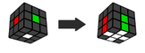
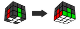
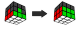
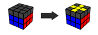
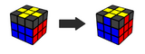
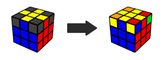
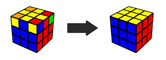
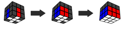
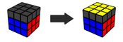
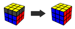

Beginner method
| 1 |  | First layer cross |
| 2 |  | First layer |
| 3 |  | Second layer |
| 4 |  | Top Cross |
| 5 |  | Match Cross Colors |
| 6 |  | Match Corners |
| 7 |  | Orient Cornerrs |

CFOP
| 1 | First layer cross. | |
| 2 |  | First 2 layers. |
| 3 |  | Orientation of the last layer |
| 4 |  | Permutation of the last layer |
© Все права защищены RCSM